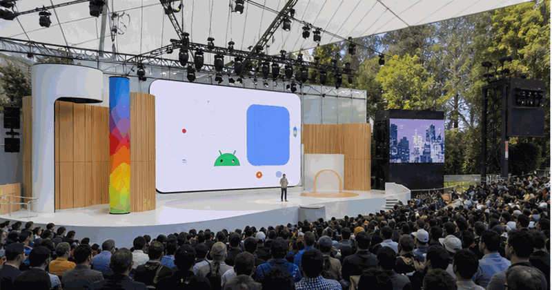
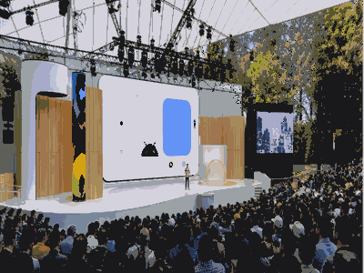

Developer conference
Google I/O
Google I/O is Google's annual developer conference for AI, Android, web, cloud and product platform updates.

More Developer ConferencesGo back to the topicSee related technology events and nearby topics.
Google I/O is useful because it turns vendor roadmaps into dates, demos and concrete things builders can watch.
The year slide carries dates and planning details. The parts slide keeps keynote, sessions and showcase separate.
| Year | Host / place | Country |
|---|---|---|
| 2026 | Mountain View | |
| 2025 | Mountain View | |
| 2024 | Mountain View | |
| 2023 | Mountain View | |
| 2022 | Mountain View | |
| 2021 | Mountain View |
Keep records as verified launch history, not generic hype.
- 19-20 May 2026 is the selected edition.
- Host context:
 United States.
United States. - Primary user value: AI, Android and developer tools.
Edition guide
Google I/O 2026
Switch between recent editions without leaving the one-slider.
Use the official event site before booking travel or planning streams.
Current edition date from Google Keyword and io.google.
Streaming, registration and venue access can change by edition.
Use the parts slide for the main event structure.
The general guide stays evergreen while this slide changes by edition.